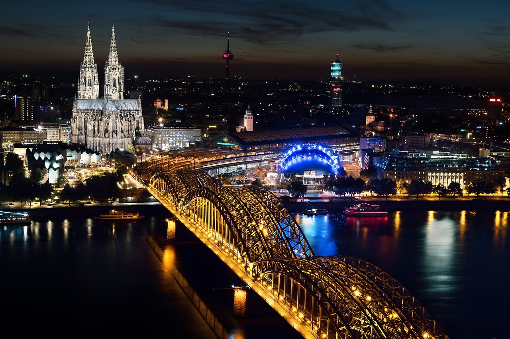

Located in the center of Europe, Germany offers visitors a diverse range of experiences, from energetic metropolis to peaceful rural getaways, by skillfully fusing its rich historical legacy with contemporary innovation. Here is a thorough guide to help you discover the many areas and well-known sites in this amazing nation:
Germany's capital, Berlin, is a vibrant city where modernism, art, and history all come together. Begin your voyage at the well-known Brandenburg Gate, a representation of liberty and unity. The Holocaust Memorial honors the dead of World War II, while the Reichstag Building, with its glass dome, provides expansive vistas in the surrounding area. Art lovers can find comfort on Museum Island, a UNESCO World Heritage site that houses the classical antiquities of the Altes Museum and the ancient relics of the Pergamon Museum. Visit the Checkpoint Charlie Museum and Berlin Wall Memorial to get a picture of the city's Cold War past.
Southern Germany's Bavaria enchants tourists with its picture-perfect landscape and rich cultural legacy. The capital city of Munich is well-known for its historic buildings, including the New Town Hall in the Gothic style and Marienplatz plaza, and for hosting the renowned Oktoberfest. Explore Neuschwanstein Castle in the Bavarian Alps, a fantasy retreat that served as the model for Disney's Sleeping Beauty castle. The Zugspitze, a nearby mountain, provides hiking and skiing in addition to stunning vistas.
Through Bavaria and Baden-Württemberg, the Romantic Road passes through scenic landscapes, vineyards, and historic villages. The timber-framed homes and well-preserved medieval walls of Rothenburg ob der Tauber are captivating. The Residenz palace, a UNESCO World Heritage site, is located close by in Würzburg. Traveling further, Augsburg combines Renaissance, Gothic, and Roman architectural styles, and Füssen provides views of the picturesque Alpine foothills and Neuschwanstein Castle.
The Rhine Valley winds through charming villages and slopes covered in vineyards, making it a UNESCO World Heritage site. Discover the legend around the Lorelei rock and Rüdesheim's wine culture. Castles like Marksburg and Burg Eltz along the river convey a sense of medieval grandeur. Explore the Deutsches Eck (German Corner) monument and Ehrenbreitstein Fortress while taking a Rhine cruise to visit Koblenz, the meeting place of the Rhine and Moselle Rivers.
Southwest Germany's Black Forest is well-known for its thick forests, quaint towns, and cuckoo clocks. Discover the picturesque views and mediaeval architecture of Freiburg from the Schlossberg. Triberg is home to the tallest waterfalls in Germany as well as a museum showcasing the region's well-known clocks. Take a leisurely drive along the picturesque Schwarzwaldhochstrasse, savor some Black Forest cake, and engage in outdoor recreation and local folklore.
Dresden, located in the state of Saxony, is a cultural hub with a wealth of Baroque architecture. See the Semperoper opera house and art galleries at the Zwinger Palace. Reconstructed following World War II, the Frauenkirche provides expansive metropolitan views. Take a paddle steamer ride down the scenic Elbe River, explore the area, and visit the neighboring Moritzburg Castle to get a taste of Saxon aristocracy.
The second-biggest city in Germany, Hamburg, is well-known for its active cultural scene and maritime heritage. Discover the contemporary HafenCity waterfront development as well as the old Speicherstadt warehouse neighborhood. See the largest model train in the world, Miniatur Wunderland, and marvel at the breathtaking architecture and performances at the Elbphilharmonie concert hall. The vibrant fish market and the Reeperbahn entertainment district should not be missed.
Situated on the Rhine River, Cologne is known for its vibrant cultural scene and Gothic architecture. The skyline is dominated by the Cologne Cathedral, a UNESCO World Heritage site. The Roman-Germanic Museum is located nearby and features antiques, and the Chocolate Museum delights guests with confections. Experience the lively atmosphere during the Cologne Carnival, stroll through the Old Town's breweries, and cross the Hohenzollern Bridge for panoramic views.
Frankfurt, a major international financial hub, has cultural landmarks such as the Museumsufer museum embankment. Modern and Medieval European art can be seen at the Städel Museum, and for a peaceful diversion, visit the Palmengarten Botanical Garden. Experience the historical Römerberg plaza in Frankfurt, the site of the Holy Roman Empire's founding, and take in the expansive views from the Main Tower observation deck.
Modern conveniences and medieval history coexist in Nuremberg, Bavaria. Discover the half-timbered homes of the Old Town and the Imperial Castle. The Nazi Party Rally Grounds Documentation Center provides historical context for WWII. Savor the local delicacies, such as gingerbread and sausages, and take a trip to the Christkindlesmarkt Christmas market every year.
Heidelberg, which is home to the oldest university in Germany, enthralls tourists with its picturesque Old Town and castle remains. Explore Heidelberg Palace in the baroque style and take in the expansive views of the Neckar River while strolling down Philosopher's Walk. Enjoy regional wines and schnitzel, as well as exploring the Karl Theodor Bridge, also referred to as the Old Bridge.
Leipzig, located in Saxony, is well known for its thriving cultural scene and rich musical history. See the St. Thomas Church, where Johann Sebastian Bach was the choirmaster, and go to the Gewandhaus music venue to see performances. Discover the creative treasures of Leipzig in the Museum der Bildenden Künste and the Grassi Museum complex, as well as the city's oldest zoo.
High-speed trains, local buses, and effective public transportation in large cities are all part of Germany's well-connected transportation system. There are many different ways to stay, from luxurious hotels and boutique guesthouses to affordable hostels and vacation rentals. Germany utilizes the Euro (€), which is widely accepted throughout the nation, as its currency. In smaller businesses and markets, cash is favored, but credit and debit cards are also widely utilized. Discovering Berlin's historical sites, taking a Rhine Valley cruise, or savoring Bavarian cuisine—Germany offers travelers an enlightening vacation experience full of cultural discoveries, picturesque scenery, and friendly locals.